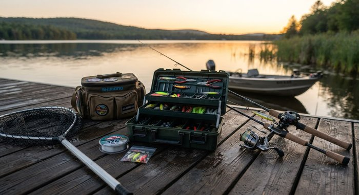
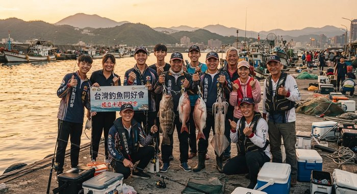

新竹外海一日遊戰績
這禮拜天氣不錯，跟釣友約去新竹外海，一早四點多就集合出發， 到現場天色微亮，海況比想像中平穩，大家士氣都很高。

出發前把裝備都整理好，這次帶了新的路亞餌試試手氣
這次戰績還不錯，帶了兩尾黑鯛回家，中間還跟旁邊的釣友聊了不少， 大家都說今年這個時間點魚況算難得的好。
收竿的時候天都快黑了，跟大家在碼頭合照留念， 下次有空再約，大家一起來釣魚啊～

這禮拜天氣不錯，跟釣友約去新竹外海，一早四點多就集合出發， 到現場天色微亮，海況比想像中平穩，大家士氣都很高。

出發前把裝備都整理好，這次帶了新的路亞餌試試手氣
這次戰績還不錯，帶了兩尾黑鯛回家，中間還跟旁邊的釣友聊了不少， 大家都說今年這個時間點魚況算難得的好。
收竿的時候天都快黑了，跟大家在碼頭合照留念， 下次有空再約，大家一起來釣魚啊～